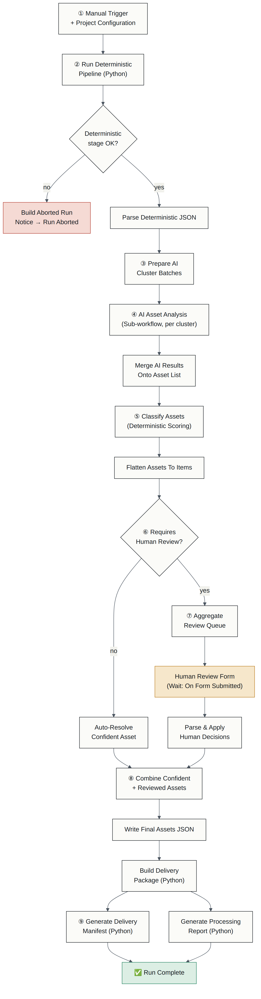
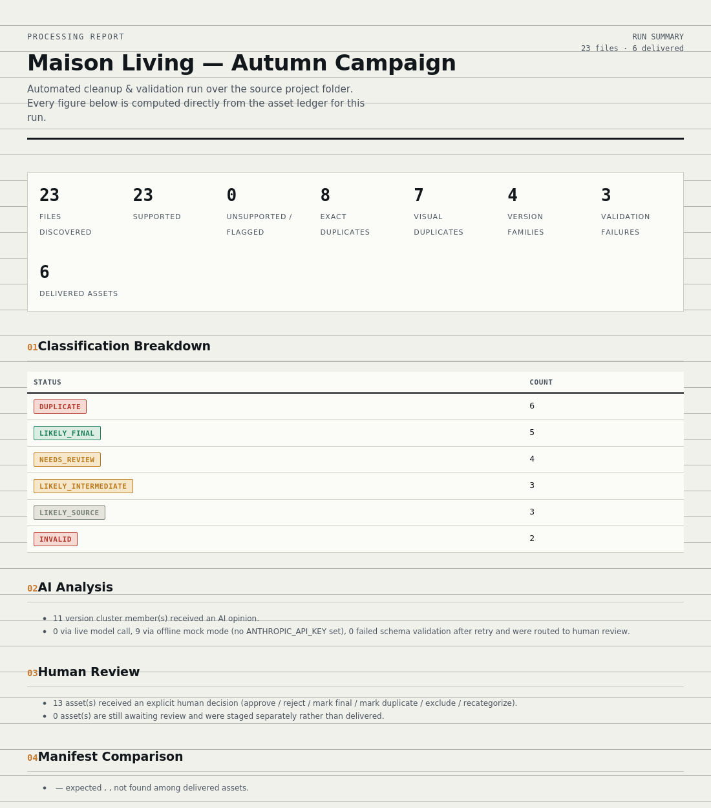
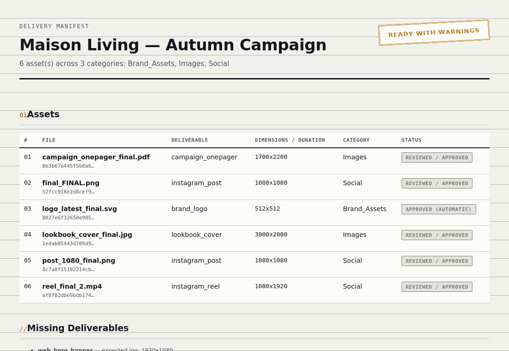

Turning messy creative project folders into clean, validated, delivery-ready asset packages — deterministic file science, AI reasoning only where it earns its place, and a human who always gets the final word.
Every finished campaign leaves behind a folder like this one. A human eventually has to sit down and figure out, file by file, which of these is actually the deliverable.
This workflow automates the mechanical parts of that cleanup — hashing, dimension checks, duplicate detection, filename-pattern grouping — and keeps the genuinely uncertain calls visible to a person instead of guessing.
Nine stages, orchestrated in n8n. deterministic steps measure things exactly. ai-assisted steps only run where a rule genuinely can't decide. human is the only thing with final authority.
The full workflow, organized into the same nine sections, with sticky notes explaining each one directly on the canvas — a recruiter can follow it without opening a single node.

23 files discovered from a deliberately messy demo project folder. Every number below is
pulled directly from the actual generated report in output/.


docs/human-review.md and
docs/limitations.md.